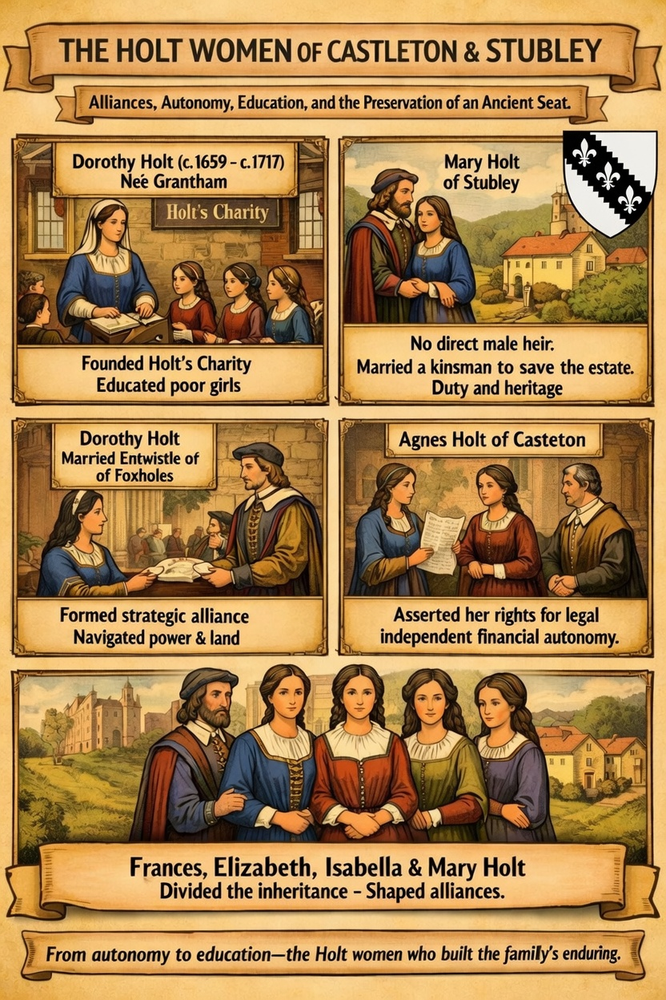

Navigating the split of the Castleton estates
Dorothy lived through a period of immense structural transition for the Holts of Stubley and Castleton. Following the death of her husband, James Holt (an Oxford alumnus who had himself expanded the endowments of the Rochdale Grammar School), the massive family estates were split among four surviving daughters and co-heirs: Frances, Elizabeth, Isabella, and Mary.
As the ancient properties were consolidated—ultimately purchased by her son-in-law Samuel Chetham—care was taken to ensure Dorothy remained securely in residence on the family property. Secure in her station as the matriarch of Castleton Hall, she turned her personal focus toward civic charity and localized educational reform.
Codifying Holt’s Charity
Before Dorothy’s intervention, regional educational endowments—such as Archbishop Parker’s historic Rochdale Grammar School—focused almost exclusively on instructing local boys in "true piety and the Latin tongue." Realizing the deep structural neglect of working-class women's literacy, Dorothy sought to break this mold.
- The 1717 bequest: In her will dated 1717, Dorothy left a specific endowment of £120 to establish what would permanently be recorded as Holt's Charity.
- The mandate for literacy: The clear, unyielding objective of the fund was to provide free, foundational schooling and basic instruction to six poor girls selected from the townships of Castleton and Rochdale.
- The multi-generational thread: This dedication to public charity ran deep in Dorothy's immediate family; her own mother, Mrs. Grantham, had previously established a 1700 trust to distribute winter clothing ("baize mantles") to impoverished widows across the same local hamlets.
A lasting structural blueprint
Though a charity designated for just six girls may seem small by modern standards, in the context of the early 1700s, Dorothy’s endowment was a radical act of localized governance. It provided a working model for female charity schooling that Rochdale would build upon for the next two centuries, bridge-lining the gap between private manorial wealth and public civic responsibility.
For researchers tracking how the wealth of the ancient Stubley and Castleton Holts filtered back into the communities that sustained them, Dorothy Holt stands alongside her 19th-century counterparts as a vital architect of regional welfare, proving that the family's legacy was measured just as much by its investments in literacy as it was by its acres of land.

URL references: History of Rochdale – Holt Ancestry | Descent of Castleton Hall – Holt Ancestry | The History of the County Palatine and Duchy of Lancaster